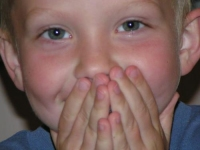

|  |
CANYON Fall 2004 Waz up G? is his favorite thing to ask you (complete with the hand sign of the 2 middle fingers crossed). Favorite song is 'Miss You' by Blink 182 which he can recite to you perfectly. What a trip! He is learning the U.S. states. Now he can name 27 of them by the shape and where they are on the map. He loves all animals, loves story time, likes to play with his toys and play in the garden. He LOVES his dad and lives for the time when dad comes home. His favorite friends live a few houses down and he goes there every day to play. He is a good boy and asks some great questions. A fun, fun job to raise him. Want to know more about Canyon? CLICK HERE for his spotlight. |